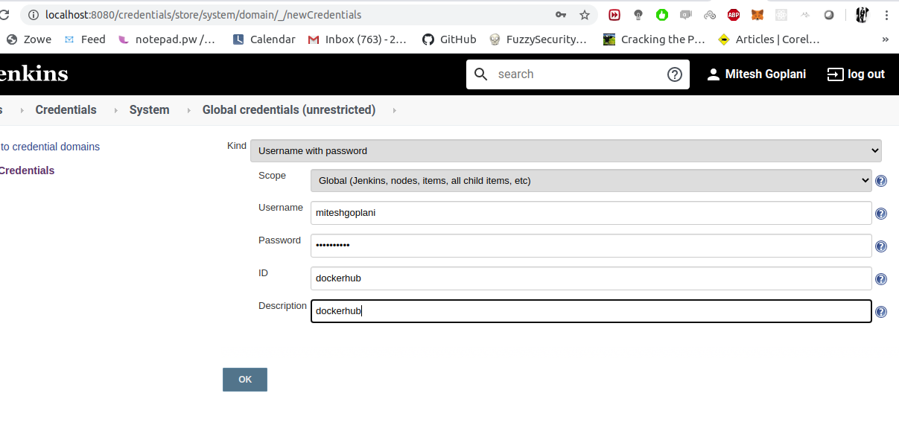

Index
Building Docker Image
What’s docker?Docker is an open platform for developers and sysadmins to build, ship, and run distributed applications.
Why pipeline?
You can reuse everything you did, put your jenkins code inside git project, the change in pipeline is showed in “changes” inside job history
What’s dockerhub?
Dockerhub is a public docker registry to store your docker images inside. If you want a private registry, you can pay for it.
What’s docker registy?
Docker registry is a server to distribute versions of docker images.
Add DockerhubCredentials in Jenkins
Go to jenkins home, click on “credentials” and “(global)”.

Jenkins Pipeline
pipeline {
environment {
registry = "miteshgoplani/docker-test"
registryCredential = 'dockerhub'
dockerImage = ''
}
agent any
tools {nodejs "node" }
stages {
stage('Cloning Git') {
steps {
git 'https://github.com/miteshgoplani/jenkinsNodeTest.git'
}
}
stage('Build') {
steps {
sh 'npm install'
}
}
stage('Test') {
steps {
sh 'npm test'
}
}
stage('Building image') {
steps{
script {
dockerImage = docker.build registry + ":$BUILD_NUMBER"
}
}
}
stage('Deploy Image') {
steps{
script {
docker.withRegistry( '', registryCredential ) {
dockerImage.push()
}
}
}
}
stage('Remove Unused docker image') {
steps{
sh "docker rmi $registry:$BUILD_NUMBER"
}
}
}
}